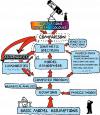

Modélisation de l’atmosphère des étoiles et des planètes¶
Coordination : France Allard (ENS de Lyon, CRAL)
Parteners : l’equipe de F.Allard (ENS de Lyon, CRAL)
Centre Blaise Pascal : Cerasela Calugaru
Dans ce projet on s’intéresse à la construction des modèles numériques pour décrire l’atmosphère des étoiles de faible masse, des naines brunes et des planètes extrasolaires. Ces travaux nécessitent des simulations numériques intensifs qui sont calibrées avec les données d’observation (de nature électromagnétique). Pour ce faire, des codes de calcul sont utilisés, dont PHOENIX et CO5BOLD. Le code PHOENIX est un code complexe développé par F. Allard en collaboration avec l’Observatoire de Hambourg. Il est principalement écrit en Fortran 95, avec certaines parties en C (pour les I/O) et C++ (pour une haute précision arithmétique utilisant la librairie QD) et il est parallélisé avec MPI (et en partie avec OpenMP).
Contribution du CBP¶
Dans le cadre de ce projet, nous apportons une expertise et soutien en informatique et calcul scientifique notamment pour le portage, déboggage et l’optimisation du code et des exécutions intensives sur les plateformes de calcul :
Adaptations et déboggage de la programmation du script de lancement écrit en shell ksh ; mise en cohérence et couplage des scripts complexes et multi-shells
Déboggage et analyse du processus de compilation des modules du code (p.ex. colors_dwarfs, run_colors) pour régler les problèmes de dépassement mémoire
Correction des fichiers de configuration de l’environnement du poste de travail
Redéfinition du script de démarrage de l’environnement et intégration dans les scripts de gestion des simulations et de soumission du code
Export de l’environnement sur une architecture multi-noeuds dans le cadre du système de batch SGE
Prescription de l’utilisation des modules optimisés (compilateur Intel, distribution MPI, bibliothèque MKL)
Mise en cohérence de la prescription des ressources allouées et optimisation de l’usage des coeurs de calcul dans le cadre de l’enchainement des soumissions
Edition des liens pour les bibliothèques mathématiques
Redéfinition des chemins de recherche des modules et meilleure utilisation des wrappers MPI, vérification des diverses options d’exécution MPI (notamment sur les protocoles de communication inter-processus, sur la distribution des processus, sur le fichier hostfile)
Recherche des diverses erreurs et adaptations à une architecture parallèle dans les scripts de lancement du code, tests de fonctionnement après déboggage
Ajustement de la quantité de mémoire virtuelle des processus pour exécuter les simulations de plus grande taille
Analyse des fichiers de log pour résoudre des problèmes d’IO sur le système de fichiers parallèle (/scratch)
Conseils à l’utilisation des nouveaux scratch, à la migration des données et à la mise en place d’une solution temporaire avec l’utilisation de /home
Suivi de jobs en vue des diverses optimisations sur l’usage des ressources et adaptations aux limitations imposées par la machine ainsi qu’aux nouvelles filles de soumission
Assistance et aide à l’utilisation d’outil de monitoring de job et des ressources
Déboggage des problèmes de lecture de fichiers, formalisation des diverses pistes de résolution
Installation/tests/optimisation dans les environnements PSMN
Expertise dans le cadre du développement et de l’utilisation du code, et en particulier dans l’écriture et l’interaction des scripts complexes et multi-shells
Un soutien régulier à la réalisation des simulations avec le code PHOENIX